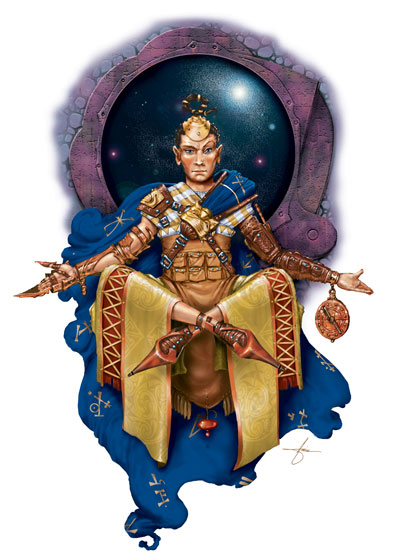
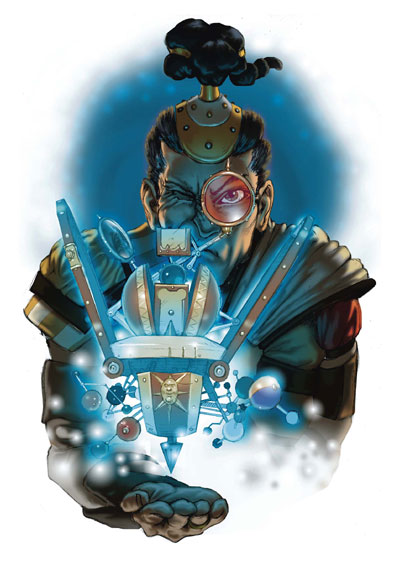

位面传送者是位面旅行方面的魔法学者与专家，他通过对奥术的研究不仅得到了认知位面传送的能力，并且也获得了创造自己的半位面的能力。（能不能使它存在的时间长到可以使用则是另一码事。）
法师与术士，籍由他们的奥术知识，会成为最好的位面传送者――成为他们的一员的条件之一就是奥术施法能力要到达一定水平。他们形成有固定标志（比如永恒之书）的松散组织或位面实体的探究团体。这些团体更像是兄弟般的组织，而不是工会或权力团体，他们经常出现或消失。
NPC位面传送者几乎不会在同样的地方常驻。他们经常去探索新的位面景观或现象。他们有时会雇佣冒险者作为守卫、援手或协助解决问题。
生命色类型：D4
职业需求
为了成为一名位面传送者，角色必须满足以下所有要求。
技能：专注10级、知识（位面）4级、辨识法术10级
专长：制造奇物
法术：可以施放5级奥术
特殊要求：在获得进阶职业之前必须游历过一个内位面或外位面。
本职技能
位面传送者的本职技能有：炼金术（智力）、专注（体质）、手艺（智力）、交涉（魅力）、收集信息（魅力）、威胁（魅力）、方向感（感知）、知识（分别选取每个技能）（智力）、表演（魅力）、专业（感知）、骑术（敏捷）、探知（智力）、搜索（智力）、语言（无）、辨识法术（智力）、游泳（强壮）。参见《玩家手册》第四章：技能察看相关描述。
每等级技能点数：4+智力调整值
职业特征
下列均为位面传送者进阶职业的职业特征。
擅长武器与防具：位面传送者没有任何武器与护甲擅长
异界传送（类法术能力）：位面传送者有异界传送的能力（如同等同于角色等级的术士施放的同名法术），每天一次。在第8级，位面传送者可以随意使用这项能力。
每日法术：位面传送者在获得位面方面的力量同时继续接受魔法的训练。这样，当他获得新等级时（除了第1、5、9级），角色获得的每日法数量就如同他获得进阶职业之前所属的施法职业一样。但是，他不会他原来职业的其他好处。这实际上意味着他把位面传送者的等级加到他原来的施法职业上，再计算出每日法数量。
如果角色在成为位面传送者以前有不止一个奥术施法职业，在得到新等级时，他必须决定每个等级将位面传送者职业加到哪个职业上，以决定每日法数量。
探知传送门（类法术能力）：在等级2，位面传送者得到使用探知传送门的类法术能力。他每天每个的位面传送者等级可以使用一次。这项能力的功能如同等于位面传送者最高施法者等级的术士施放的同名法术。
位面生存（特异能力）：在第3级，位面骑士以和谐的与他旅行的位面的自然状态相处，它自身会对这些位面自然效果免疫。可以被防护位面效果法术取消的效果都会被这项能力取消。
位面传送者对于或元素位面“正常的”火焰免疫，但是火属性的攻击与为正常灼热的区域依然会影响到他。由于这项特异能力会造成他自己对某一位面和谐，位面传送者依然会对来自其他位面的同类型伤害攻击，这种攻击形态并不属于自然秩序的一部分。在其他位面，包括物质位面，火焰依然可以伤害到位面传送者。
形态稳定（特异能力）：在第4级，位面传送者得到将自己的意志施加于他周遭有限空间的能力。在有突出形态特征的位面（例如D&D宇宙系统中的混沌海）或魔法形态特征位面（例如幽影界），位面传送者周围可以维持地形稳定。位面传送者自动稳定地形，范围是每位面传送者等级30英尺。这个区域随着位面传送者移动，并以他为中心。位面上的永久建筑不会受到影响，在正常活动中地形依然保持变化。
授予位面生存（超自然能力）：等级5或更高的位面传送者可以通过与等同于位面传送者等级数量的其他生物碰触将位面生存能力延伸到他们身上。一旦授予，位面生存能力将持续24小时。一旦位面传送者的同伴与位面传送者不再处于同一位面，对他们的保护立即消失。
控制位面变化（超自然能力）：在第6级，位面传送者凭直觉了解位面生物是如何与他们所居住的位面互动的，并且可以在位面边界引发小的改变。在施放次元锚与驱逐术时，位面传送者施法者等级视同增加4个等级。
心灵感应（超自然能力）：7级或更高的位面传送者可以用心灵感应与100英尺内掌握语言的任意生物联系。
位面区域转换（类法术能力）：在第9级，位面传送者获得能力可以将一个区域从一个位面移动到另一位面。以位面传送者为中心的，每等级最多100英尺的球形空间可以被移动。所有球体中不自愿移动的个体可以通过意志检定（DC=20）以防止完全的转换。
如同异界传送法术，这不可能实现精确目的地控制。
当这个断片被带到新位面，新位面特征将在1D4轮内完全作用于它。例如。被带到物质位面的火元素位面的一部分暂时燃烧（1D4轮），然后熄灭。
由于这种转换，目标位面的一块对等区域会出现在原位面上。原位面特征将在1D4轮内完全作用于它。
被转换区域在10+位面传送者等级的天数后将转换回去。
半位面萌芽：半位面萌芽是由到达10级的位面传送者培育的小型次元空间。这个小型次元空间通常用于操作的基础。位面传送者同时只能拥有一个半位面，除非所有通向旧半位面的入口都被摧毁，否则不能构建一个新的半位面。位面传送者必须持有一块至少加值1000gp的无瑕宝石，连续工作100天，每天8小时。
一旦完成这些工作，这个萌芽开放成为一个微型球体半位面，半径1英尺。它成长得很快，每天可以生长1英尺半径，直到最大半径10英尺×位面传送者最高施法者等级。当到达这个尺寸以后，半位面成长缓慢，每年成长2英尺半径。如果创造者毁灭，半位面停止生长。
位面传送者的半位面有以下位面特征：正常时间、可变、普通魔法。在创造过程中，位面传送者可以设定他喜欢的任意重力特征，元素特征与阵营特征，也可以决定位面是有限的或独立的。若半位面不是成形的，位面传送者在创造时有地形的完全控制权，所以他可以决定它是否是可以预测的，多山的荒地或田园风味的森林。在半位面生长时，地形按照创造时的设定自行扩展。它不可能在生长过程中使凹凸不平的山峰变成一英尺的球体、悬崖或至高点的外形。
半位面由萌芽的成长是没有供给的，所以位面传送者必须提供建筑所需的材料。它有一个单一的传送入口，位面传送者可以控制这个通道。半位面通常用于隐蔽所、研究室或特定野兽的监狱。

A planeshifter uses his dimensional sextant